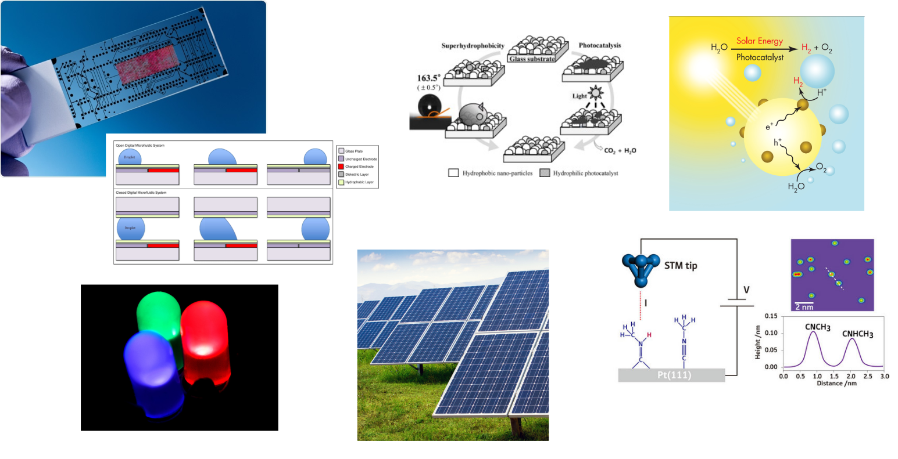

Navigation instructions
Press
to open a written transcript of the audio in the slides.
Press the
SPACE
key to progress forward in the presentation.
Use the
UP
/
DOWN
/
LEFT
/
RIGHT
arrow keys or the arrows in the bottom right corner of the page to navigate the presentation.
CP535: Molecular and interfacial science
Module overview
L Lue
Department of Chemical and Process Engineering
University of Strathclyde
Future directions in chemical engineering

Topics
Interfacial science
Microscopic dynamics
Statistical mechanics
Electronic properties of materials
Overview
Module leader: Leo Lue
Demonstrator: Chris Boyle
Lectures / Q&A sessions:
Tuesday 14.00–15.00 (weeks 1–10)
all on-line
Tutorials:
Friday 10.00–11.30 (weeks 1–10)
on-line: weeks 1, 3, 5, 7, 9, 11
on-campus in Room GH703: weeks 2, 4, 6, 8, 10
Module review:
Tuesday 14.00-15.00 (week 11)
Friday 10.00–11.30 (week 11)
Tentative schedule
Week 1: Surfaces and interfaces
Week 2: Solid interfaces
Week 3: Microscopic dynamics
Week 4: Statistical mechanics
Week 5: Ideal gases and kinetic theory
Week 6: Adsorption
Week 7: Quantum systems
Week 8: Electronic properties of materials
Week 9: Electronic devices
Week 10: Catalysis
Week 11: Module review
Components of assessment
component
weight
format
time
final exam
70%
2 hours
December exam
Review materials
CP203: Thermodynamics and Chemical Principles
intermolecular forces / electron energy levels
thermodynamics / combined first and second laws
CP204: Fluid Flow and Heat Transfer
mechanics: force, momentum
differential balances
CP207: Process Analysis and Statistics
probability distributions / mean / expectation value
correlations / standard deviation
MM211: Mathematics 3B
calculus
differential equations
Questions?
If you have any questions, please email me at leo.lue@strath.ac.uk.